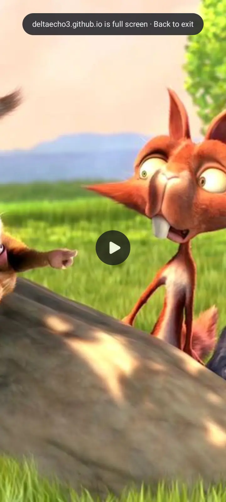
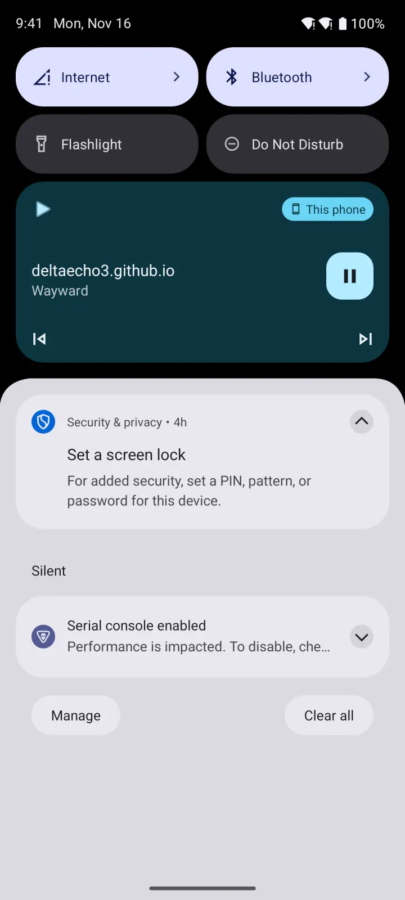

Full screen, background play and picture-in-picture
How-to
Watch a video on a page in full screen, keep it playing when you leave Wayward or watch it in a small window.
Full screen
Tap a video's full screen button on the page. The video takes the whole screen: Wayward's bars and your phone's own step aside, and a wide video turns the screen on its side. For a few seconds a notice says "example.com is full screen · Back to exit" with the page's own site, so a page can't pretend to be part of Wayward. Press Back to leave full screen.

To jump in a full screen video, drag sideways across it (above its bottom quarter, which belongs to the video's own controls). A readout shows where it will land; let go to jump there.
Keep playing after you leave
With Background play on (it is to start with), a page's video or sound keeps playing when you leave Wayward or turn the screen off. A notification gives you the controls: previous, pause or play, and next, and your headphones' buttons work too. It shows the site's name, or "A private tab" for a private one, and on the lock screen just Wayward is playing. Turn it off and videos pause when you leave.

Picture-in-picture
With Picture-in-picture on (it is to start with), a video playing full screen keeps playing in a small window, shaped like the video, when you leave Wayward. Move the window wherever you like.
The settings
Open the ⋮ menu, then Settings > Video and audio:
- When you leave Wayward: Background play and Picture-in-picture.
- Protected video: Play protected video. Streaming sites protect their videos with DRM (Widevine), which your phone handles. A site asks the first time. Turned off, protected video doesn't play.
In this version of Wayward, one site's videos always pause when you leave and don't go to picture-in-picture; the notes under the switches say which.
A locked tab plays nothing, and whatever locks stops playing.